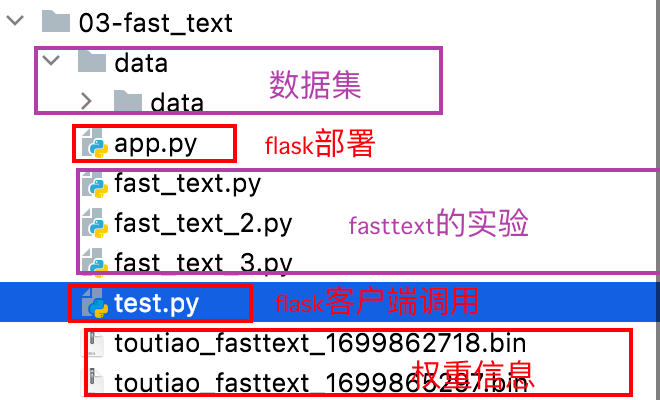
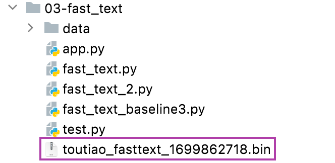
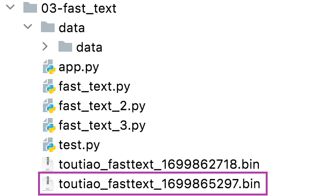

FastText模型¶
学习目标：
1.知道如何构建模型
2.能够进行模型优化
3.能够完成模型的部署
Fasttext的案例代码结构如下所示：

1.数据准备¶
使用 fastText 工具解决文本分类任务时，存放数据集的文本文件必须满足以下两个条件：
-
文本文件中的每一行对应一个文档；
-
文档的类别标签以 __label__name 为前缀放在文档的最前面；
下面举两个符合条件的小例子。
单标签数据集：
__label__1 i love you
__label__0 i hate you
上面的单标签数据集中一共有 2 个文档（每一行一个文档），第一个文档 "i love you"，对应的类别标签为 1（具体类别名为 前缀后面的文本），第二个文档 "i hate you"，对应的类别标签为 0。
多标签数据集：
__label__baking __label__food-safety __label__substitutions __label__peanuts how to seperate peanut oil from roasted peanuts at home?
__label__chocolate American equivalent for British chocolate terms
__label__baking __label__oven __label__convection Fan bake vs bake
__label__sauce __label__storage-lifetime __label__acidity __label__mayonnaise Regulation and balancing of readymade packed mayonnaise and other sauces
多标签数据集中的不同的类别标签用空格来分割。比如：对于 "Regulation and balancing of readymade packed mayonnaise and other sauces" 文档的类别标签有 sauce、storage-lifetime、acidity 和 mayonnaise 5 个。
**单标签和多标签数据集在 fastText 的使用上并没有区别 **
所以需要将数据处理成上述形式。
代码位置:
03-fast_text/data/data/preprocess.py
- 获取数据集中的类别信息
# 存储数据集中的类别信息：id:label
id_to_label = {}
# id从0开始
idx = 0
# 打开数据集类别文件
with open('class.txt', 'r', encoding='utf-8') as f1:
# 遍历每一行文本
for line in f1.readlines():
# 去掉换行符和空白符
line = line.strip('\n').strip()
# 记录在字典中
id_to_label[idx] = line
# id增加
idx += 1
print('id_to_label:', id_to_label)
输出结果为：
id_to_label: {0: 'finance', 1: 'realty', 2: 'stocks', 3: 'education', 4: 'science', 5: 'society', 6: 'politics', 7: 'sports', 8: 'game', 9: 'entertainment'}
- 读取训练集数据，并转换为fasttext要求的形式
# 用来存储训练集数据
train_data = []
# 打开数据集文件，进行处理
with open('train.txt', 'r', encoding='utf-8') as f2:
# 获取每一行数据
for line in f2.readlines():
line = line.strip('\n').strip()
# 获取文本和对应的标签信息
sentence, label = line.split('\t')
# 1: 首先处理标签部分：获取标签id,并获取标签名称
label_id = int(label)
label_name = id_to_label[label_id]
# 构建fasttext需要的训练集数据
new_label = '__label__' + label_name
# 2: 然后处理文本部分, 可以按字划分, 也可以按词划分
sent_char = ' '.join(list(sentence))
# 3: 将文本和标签组合成fasttext规定的格式
new_sentence = new_label + ' ' + sent_char
# 4: 将数据添加到list中
train_data.append(new_sentence)
print(train_data[:5])
结果为：
['__label__education 中 华 女 子 学 院 ： 本 科 层 次 仅 1 专 业 招 男 生', '__label__science 两 天 价 网 站 背 后 重 重 迷 雾 ： 做 个 网 站 究 竟 要 多 少 钱', '__label__realty 东 5 环 海 棠 公 社 2 3 0 - 2 9 0 平 2 居 准 现 房 9 8 折 优 惠', '__label__sports 卡 佩 罗 ： 告 诉 你 德 国 脚 生 猛 的 原 因 不 希 望 英 德 战 踢 点 球', '__label__society 8 2 岁 老 太 为 学 生 做 饭 扫 地 4 4 年 获 授 港 大 荣 誉 院 士']
- 将数据写入到相应的文件中
# 将数据处理后的结果存储在txt文本中
with open('train_fast.txt', 'w', encoding='utf-8') as f3:
# 遍历每一行数据
for data in train_data:
# 写入到文件中
f3.write(data + '\n')
print('FastText训练数据预处理完毕!')
输出结果: 查看train_fast.txt文件如下
__label__education 中 华 女 子 学 院 ： 本 科 层 次 仅 1 专 业 招 男 生
__label__science 两 天 价 网 站 背 后 重 重 迷 雾 ： 做 个 网 站 究 竟 要 多 少 钱
__label__realty 东 5 环 海 棠 公 社 2 3 0 - 2 9 0 平 2 居 准 现 房 9 8 折 优 惠
__label__sports 卡 佩 罗 ： 告 诉 你 德 国 脚 生 猛 的 原 因 不 希 望 英 德 战 踢 点 球
__label__society 8 2 岁 老 太 为 学 生 做 饭 扫 地 4 4 年 获 授 港 大 荣 誉 院 士
__label__society 记 者 回 访 地 震 中 可 乐 男 孩 ： 将 受 邀 赴 美 国 参 观
__label__entertainment 冯 德 伦 徐 若 � 隔 空 传 情 默 认 其 是 女 友
__label__realty 传 郭 晶 晶 欲 落 户 香 港 战 伦 敦 奥 运 装 修 别 墅 当 婚 房
__label__game 《 赤 壁 O L 》 攻 城 战 诸 侯 战 硝 烟 又 起
__label__science “ 手 机 钱 包 ” 亮 相 科 博 会
__label__education 上 海 2 0 1 0 上 半 年 四 六 级 考 试 报 名 4 月 8 日 前 完 成
__label__sports 李 永 波 称 李 宗 伟 难 阻 林 丹 取 胜 透 露 谢 杏 芳 有 望 出 战
__label__society 3 岁 女 童 下 体 红 肿 自 称 被 幼 儿 园 老 师 用 尺 子 捅 伤
__label__stocks 金 证 顾 问 ： 过 山 车 行 情 意 味 着 什 么
__label__realty 谁 料 地 王 如 此 虚
__label__game 《 光 环 5 》 L o g o 泄 露 K i n e c t 版 几 无 悬 念
__label__realty 海 淀 区 领 秀 新 硅 谷 宽 景 大 宅 预 计 1 0 月 底 开 盘
__label__realty 柴 志 坤 ： 土 地 供 应 量 不 断 从 紧 地 价 难 现 0 7 水 平 ( 图 )
__label__game 伊 达 传 说 E D D A O n l i n e
__label__science 三 联 书 店 建 起 书 香 巷
__label__science 宇 航 员 尿 液 堵 塞 国 际 空 间 站 水 循 环 系 统
__label__politics 研 究 发 现 开 车 技 术 差 或 与 基 因 相 关
__label__sports 皇 马 输 球 替 补 席 闹 丑 闻 队 副 女 球 迷 公 然 调 情 ( 视 频 )
__label__realty 北 京 建 工 与 市 政 府 再 度 合 作 推 出 郭 庄 子 限 价 房
__label__entertainment 组 图 ： 李 欣 汝 素 颜 出 镜 拍 低 碳 环 保 大 片
- 同上处理测试集数据, 得到test_fast.txt; 同上处理验证集的数据, 得到dev_fast.txt
2.模型搭建¶
代码位置:
03-fast_text/fast_text.py
使用train_supervised函数训练模型，其中 input 参数指定包含训练数据集的文本文件，函数返回在训练集上训练好的模型对象，我们可以通过这个模型对象访问训练模型的各种信息。
import fasttext
# 指定训练集和测试集数据
train_data_path = './data/data/train_fast.txt'
test_data_path = './data/data/test_fast.txt'
# 开启模型训练
model = fasttext.train_supervised(input=train_data_path, wordNgrams=2)
print('词的数量',len(model.words))
print('标签值',model.labels)
# 开启模型测试
result = model.test(test_data_path)
# 输出测试结果
print(result)
- 输出结果:
Read 3M words
Number of words: 4760
Number of labels: 10
Progress: 100.0% words/sec/thread: 1745187 lr: 0.000000 avg.loss: 0.284760 ETA: 0h 0m 0s
词的数量: 4760
标签值: ['__label__science', '__label__finance', '__label__realty', '__label__sports', '__label__society', '__label__politics', '__label__stocks', '__label__entertainment', '__label__game', '__label__education']
(10000, 0.9165, 0.9165)
结论: 在10000条测试集上, 我们的模型得到了0.9165的精确率, 0.9165的召回率. 相比较随机森林已经有了大幅度的提升.
3.模型优化¶
- 对于任意表现良好的模型, 优化的脚步都不能停止!
3.1 fasttext优化1¶
在真实的生产环境下, 对于fasttext模型一般不会采用费时费力的人工调参, 而都是用自动化最优参数搜索的模式.该代码位置在：
03-fast_text/fast_text_2.py
接下来使用 FastText 框架进行文本分类模型的训练、测试和保存，具体过程为：
- 指定训练集、验证集和测试集的文件路径。
- 使用
fasttext.train_supervised函数进行文本分类模型的训练，通过超参数调优来提高模型性能。 - 使用
model.test函数对测试集进行评估，输出评估结果。 - 将训练好的模型保存到文件中，文件名包含当前时间戳。
具体实现如下：
import fasttext
import time
# 获取训练集,测试集和验证集的路径
train_data_path = 'data/data/train_fast.txt'
dev_data_path = 'data/data/dev_fast.txt'
test_data_path = 'data/data/test_fast.txt'
# 开启模型训练
# autotuneValidationFile参数需要指定验证数据集所在的路径
# 它将在验证集是使用随机搜索的方法寻找最优的超参数
# 使用autotuneDuration参数可以控制随机搜索的时间, 默认是300秒.
# 根据不同的需求, 可以延长或者缩短时间.
# 调节的超参数包含这些内容:
# lr 学习率 default 0.1
# dim 词向量维度 default 100
# ws 上下文窗口大小 default 5， cbow
# epoch epochs 数量 default 5
# minCount 最低词频 default 5
# wordNgrams n-gram设置 default 1
# loss 损失函数 {hs,softmax} default softmax
# minn 最小字符长度 default 0
# maxn 最大字符长度 default 0
# 我们设置verbose来观察超参数的值
# verbose: 该参数决定日志打印级别, 当设置为3, 可以将当前正在尝试的超参数打印出来
model = fasttext.train_supervised(input=train_data_path, # 训练集路径
autotuneValidationFile=dev_data_path, # 验证集路径
autotuneDuration=6, # 时间单位为s
wordNgrams=2, # N_gram
verbose=3)
# 开启模型测试
result = model.test(test_data_path)
print(result)
# 获取当前时间,作为模型文件的名称
time1 = int(time.time())
model_save_path = "./toutiao_fasttext_{}.bin".format(time1)
# 模型保存
model.save_model(model_save_path)
- 输出结果:
/Users/mac/opt/anaconda3/envs/dltorch/bin/python /Users/mac/Desktop/投满分项目/03-code/03-fast_text/fast_text_2.py
Trial = 1
epoch = 5
lr = 0.1
dim = 100
minCount = 1
wordNgrams = 2
minn = 0
maxn = 0
bucket = 2000000
dsub = 2
loss = softmax
Warning : wordNgrams is manually set to a specific value. It will not be automatically optimized.
Progress: 33.5% Trials: 1 Best score: unknown ETA: 0h 0m 3scurrentScore = 0.912
train took = 2.26149
Trial = 2
epoch = 1
lr = 0.705001
dim = 320
minCount = 1
wordNgrams = 2
minn = 0
maxn = 0
bucket = 2211530
dsub = 2
loss = softmax
Progress: 100.0% Trials: 2 Best score: 0.912000 ETA: 0h 0m 0s
Training again with best arguments
currentScore = 0.9051
train took = 4.87654
Best selected args = 0
epoch = 5
lr = 0.1
dim = 100
minCount = 1
wordNgrams = 2
minn = 0
maxn = 0
bucket = 2000000
dsub = 2
loss = softmax
Read 3M words
Number of words: 4760
Number of labels: 10
Progress: 100.0% words/sec/thread: 1844699 lr: 0.000000 avg.loss: 0.283439 ETA: 0h 0m 0s
(10000, 0.9172, 0.9172)
模型的保存结果为：

结论: 经过参数的自动搜索, 得到了最好的一版模型, 主要参数包括词嵌入维度dim=355, wordNgrams=2等. 模型的最终表现精准率等于91.73%, 召回率也是91.73%, 相比较最初的91.62%有稍许提升但并不显著.
3.2 fasttext优化2¶
模型的优化不仅仅在架构上, 更要注意回溯到源头, 也就是数据端的优化. * 第一步: 原始数据采用词向量级别. * 第二步: 重新训练模型并评估.
第一步: 原始数据采用词向量级别.
代码位置:
03-fast_text/data/data/preprocess1.py
获取数据集中的类别信息
import jieba
# 存储数据集中的类别信息：id:label
id_to_label = {}
# id从0开始
idx = 0
# 打开数据集类别文件
with open('class.txt', 'r', encoding='utf-8') as f1:
# 遍历每一行文本
for line in f1.readlines():
# 去掉换行符和空白符
line = line.strip('\n').strip()
# 记录在字典中
id_to_label[idx] = line
# id增加
idx += 1
print('id_to_label:', id_to_label)
- 输出结果为：
id_to_label: {0: 'finance', 1: 'realty', 2: 'stocks', 3: 'education', 4: 'science', 5: 'society', 6: 'politics', 7: 'sports', 8: 'game', 9: 'entertainment'}
读取训练集数据，并转换为fasttext要求的形式
# 用来存储训练集数据
train_data = []
# 打开数据集文件，进行处理
with open('train.txt', 'r', encoding='utf-8') as f2:
# 获取每一行数据
for line in f2.readlines():
line = line.strip('\n').strip()
# 获取文本和对应的标签信息
sentence, label = line.split('\t')
# 1: 首先处理标签部分：获取标签id,并获取标签名称
label_id = int(label)
label_name = id_to_label[label_id]
# 构建fasttext需要的训练集数据
new_label = '__label__' + label_name
# 2: 然后处理文本部分, 可以按字划分, 也可以按词划分
sent_char = ' '.join(list(jieba.cut(sentence)))
# 3: 将文本和标签组合成fasttext规定的格式
new_sentence = new_label + ' ' + sent_char
# 4: 将数据添加到list中
train_data.append(new_sentence)
print(train_data[:5])
- 结果为：
['__label__education 中华 女子 学院 ： 本科 层次 仅 1 专业 招 男生', '__label__science 两天 价 网站 背后 重重 迷雾 ： 做个 网站 究竟 要 多少 钱', '__label__realty 东 5 环 海棠 公社 230 - 290 平 2 居 准现房 98 折 优惠', '__label__sports 卡佩罗 ： 告诉 你 德国 脚 生猛 的 原因 不 希望 英德 战 踢 点球', '__label__society 82 岁 老太 为 学生 做饭 扫地 44 年 获授 港大 荣誉 院士']
将数据写入到相应的文件中
# 将数据处理后的结果存储在txt文本中
with open('train_fast.txt', 'w', encoding='utf-8') as f3:
# 遍历每一行数据
for data in train_data:
# 写入到文件中
f3.write(data + '\n')
print('FastText训练数据预处理完毕!')
- 输出结果(查看train_fast1.txt文件):
__label__education 中华 女子 学院 ： 本科 层次 仅 1 专业 招 男生
__label__science 两天 价 网站 背后 重重 迷雾 ： 做个 网站 究竟 要 多少 钱
__label__realty 东 5 环 海棠 公社 230 - 290 平 2 居 准现房 98 折 优惠
__label__sports 卡佩罗 ： 告诉 你 德国 脚 生猛 的 原因 不 希望 英德 战 踢 点球
__label__society 82 岁 老太 为 学生 做饭 扫地 44 年 获授 港大 荣誉 院士
__label__society 记者 回访 地震 中 可乐 男孩 ： 将 受邀 赴美国 参观
__label__entertainment 冯德伦 徐若 � 隔空 传情 默认 其是 女友
__label__realty 传 郭晶晶 欲 落户 香港 战 伦敦 奥运 装修 别墅 当婚 房
__label__game 《 赤壁 OL 》 攻城战 诸侯 战 硝烟 又 起
__label__science “ 手机 钱包 ” 亮相 科博会
__label__education 上海 2010 上半年 四六级 考试 报名 4 月 8 日前 完成
__label__sports 李永波 称 李宗伟 难 阻林丹 取胜 透露 谢杏芳 有望 出战
__label__society 3 岁 女童 下体 红肿 自称 被 幼儿园 老师 用 尺子 捅 伤
__label__stocks 金证 顾问 ： 过山车 行情 意味着 什么
__label__realty 谁料 地 王 如此 虚
__label__game 《 光环 5 》 Logo 泄露 Kinect 版几无 悬念
__label__realty 海淀区 领秀新 硅谷 宽景 大宅 预计 10 月底 开盘
__label__realty 柴志坤 ： 土地 供应量 不断 从 紧 地价 难现 07 水平 ( 图 )
__label__game 伊达 传说 EDDA Online
__label__science 三联书店 建起 书香 巷
__label__science 宇航员 尿液 堵塞 国际 空间站 水 循环系统
__label__politics 研究 发现 开车 技术 差 或 与 基因 相关
__label__sports 皇马 输球 替补席 闹 丑闻 队 副 女球迷 公然 调情 ( 视频 )
__label__realty 北京 建工 与 市政府 再度 合作 推出 郭 庄子 限价 房
__label__entertainment 组图 ： 李欣汝素 颜 出镜 拍低 碳 环保 大片
测试集同样的方法进行处理, 得到结果文件test_fast1.txt; 验证集同样的方法进行处理, 得到结果文件dev_fast1.txt
模型训练, 代码位置:
03-fast_text/fast_text_3.py
该代码与fast_text_2.py是完全一样的，不同的是数据集的位置不一样
import fasttext
import time
# 获取训练集,测试集和验证集的路径
train_data_path = 'data/data/train_fast1.txt'
dev_data_path = 'data/data/dev_fast1.txt'
test_data_path = 'data/data/test_fast1.txt'
# 开启模型训练
# autotuneValidationFile参数需要指定验证数据集所在的路径
# 它将在验证集是使用随机搜索的方法寻找最优的超参数
# 使用autotuneDuration参数可以控制随机搜索的时间, 默认是300秒.
# 根据不同的需求, 可以延长或者缩短时间.
# 调节的超参数包含这些内容:
# lr 学习率 default 0.1
# dim 词向量维度 default 100
# ws 上下文窗口大小 default 5， cbow
# epoch epochs 数量 default 5
# minCount 最低词频 default 5
# wordNgrams n-gram设置 default 1
# loss 损失函数 {hs,softmax} default softmax
# minn 最小字符长度 default 0
# maxn 最大字符长度 default 0
# 我们设置verbose来观察超参数的值
# verbose: 该参数决定日志打印级别, 当设置为3, 可以将当前正在尝试的超参数打印出来
model = fasttext.train_supervised(input=train_data_path, # 训练集路径
autotuneValidationFile=dev_data_path, # 验证集路径
autotuneDuration=6, # 时间单位为s
wordNgrams=2, # N_gram
verbose=3)
# 开启模型测试
result = model.test(test_data_path)
print(result)
# 获取当前时间,作为模型文件的名称
time1 = int(time.time())
model_save_path = "./toutiao_fasttext_{}.bin".format(time1)
# 模型保存
model.save_model(model_save_path)
- 输出结果:
Warning : wordNgrams is manually set to a specific value. It will not be automatically optimized.
Trial = 1
epoch = 5
lr = 0.1
dim = 100
minCount = 1
wordNgrams = 2
minn = 0
maxn = 0
bucket = 2000000
dsub = 2
loss = softmax
Progress: 41.9% Trials: 1 Best score: unknown ETA: 0h 0m 3scurrentScore = 0.902
train took = 2.6367
Trial = 2
epoch = 1
lr = 0.595139
dim = 268
minCount = 1
wordNgrams = 2
minn = 0
maxn = 0
bucket = 2201775
dsub = 2
loss = softmax
Progress: 100.0% Trials: 2 Best score: 0.902000 ETA: 0h 0m 0s
currentScore = 0.8978
train took = 4.49292
Best selected args = 0
epoch = 5
lr = 0.1
dim = 100
minCount = 1
wordNgrams = 2
minn = 0
maxn = 0
bucket = 2000000
dsub = 2
loss = softmax
Training again with best arguments
Read 2M words
Number of words: 118456
Number of labels: 10
Progress: 100.0% words/sec/thread: 1049980 lr: 0.000000 avg.loss: 0.235721 ETA: 0h 0m 0s
(10000, 0.9093, 0.9093)
模型保存结果为：

结论: 采用词为单位的模型效果精准率和召回率都达到了90.93%, 相比于前面的实验并没有得到提升。
4. 模型部署¶
- 工业界中的AI是指"能落地的AI", 即指在生产环境中可以部署并提供在线, 或离线作业的模型.
- 第一步: 编写主服务逻辑代码.
- 第二步: 启动Flask服务.
- 第三步: 编写测试代码.
- 第四步: 执行测试并检验结果.
4.1 服务端代码.¶
代码位置:
03-fast_text/app.py
服务端代码实现了一个使用 FastText 模型进行文本分类的 Flask 服务。服务接收包含用户ID (uid) 和文本 (text) 的 POST 请求，对文本进行分词后，使用事先训练好的 FastText 模型进行分类预测，并返回分类结果。
import time
import jieba
import fasttext
# 服务框架使用Flask, 导入工具包
from flask import Flask
from flask import request
app = Flask(__name__)
# 导入发送http请求的requests包
import requests
# 加载自定义的停用词表
jieba.load_userdict('./data/data/stopwords.txt')
# 提供已经训练好的模型路径
model_save_path = 'toutiao_fasttext_1699862718.bin'
# 实例化fasttext对象, 并加载模型参数用于推断, 提供服务请求
model = fasttext.load_model(model_save_path)
print('FastText模型实例化完毕...')
# 设定投满分项目的服务的路由和请求方法
@app.route('/v1/main_server/', methods=["POST"])
def main_server():
# 接收来自请求方发送的服务字段
uid = request.form['uid']
text = request.form['text']
# 对请求文本进行处理, 因为前面加载的是基于分词的模型, 所以这里也要对text进行分词操作
input_text = ' '.join(jieba.lcut(text))
# 执行模型的预测
res = model.predict(input_text)
predict_name = res[0][0]
return predict_name
if __name__ == '__main__':
app.run(host='0.0.0.0',port=5000)
- 输出结果:
Building prefix dict from the default dictionary ...
Loading model from cache /var/folders/tp/phgg55c9549cnr0qyp8qf4j40000gn/T/jieba.cache
Loading model cost 0.647 seconds.
Prefix dict has been built successfully.
Warning : `load_model` does not return WordVectorModel or SupervisedModel any more, but a `FastText` object which is very similar.
FastText模型实例化完毕...
* Serving Flask app 'app'
* Debug mode: off
WARNING: This is a development server. Do not use it in a production deployment. Use a production WSGI server instead.
* Running on all addresses (0.0.0.0)
* Running on http://127.0.0.1:5000
* Running on http://172.16.43.153:5000
4.2 客户端代码.¶
代码位置:
03-fast_text/test.py
客户端代码实现了向前面所述 FastText 模型提供的 Flask 服务发送 HTTP POST 请求，并输出分类结果和预测耗时。
import requests
import time
# 定义请求的url地址和传入的数据
url = "http://0.0.0.0:5000/v1/main_server/"
data = {"uid": "AI-6-202204", "text": "公共英语(PETS)写作中常见的逻辑词汇汇总"}
# 计时
start_time = time.time()
# 向服务发送请求
res = requests.post(url, data=data)
# 获取处理时间
cost_time = time.time() - start_time
# 打印返回结果
print('输入文本:', data['text'])
print('分类结果:', res.text)
print('单条样本预测的耗时:', cost_time * 1000, 'ms')
- 输出结果:
输入文本: 公共英语(PETS)写作中常见的逻辑词汇汇总
分类结果: __label__education
单条样本预测耗时: 4.739046096801758 ms
5. 结论¶
预测结果还不错, 同时更重要的是在GPU环境下预测时间仅仅不到5ms!!! 这是工业界场景下fasttext工具最大的意义!!!